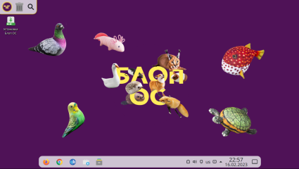
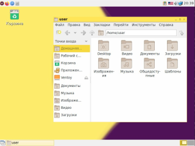

|  | Блоп ОС OneЭто основная версия Блоп ОС на Debian Sid с оболочкой KDE Plasma 5. Plasma 5 требует средний компьютер для того чтобы он хорошо работал. СкачатьСистемные требования |
Блоп ОС One PlusЭто редакция Блоп ОС основана на Блоп ОС One но тут добавлены программы для создания контента контента. СкачатьСистемные требования |
|  | Блоп ОС One LiteЭто версия Блоп ОС для слабых компьютеров с оболочкой LXDE и он потребляет 120 мегабайт! Не доступноСистемные требования |